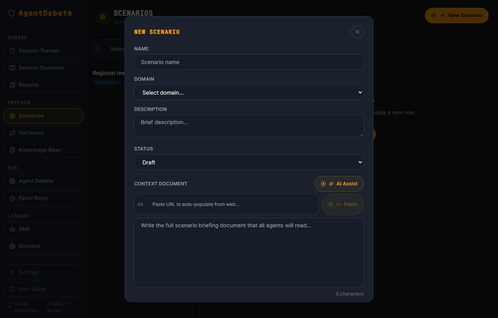
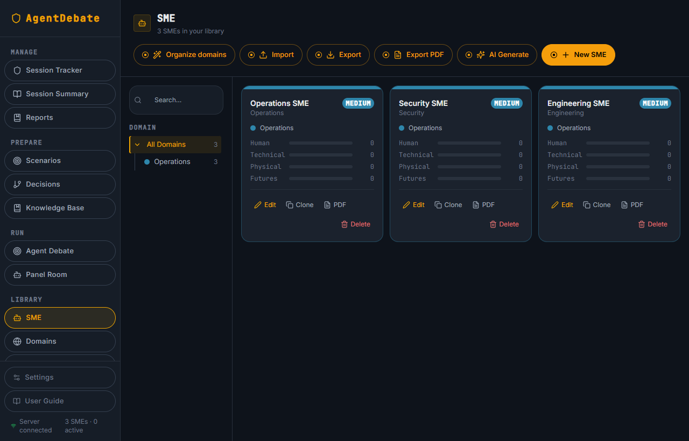
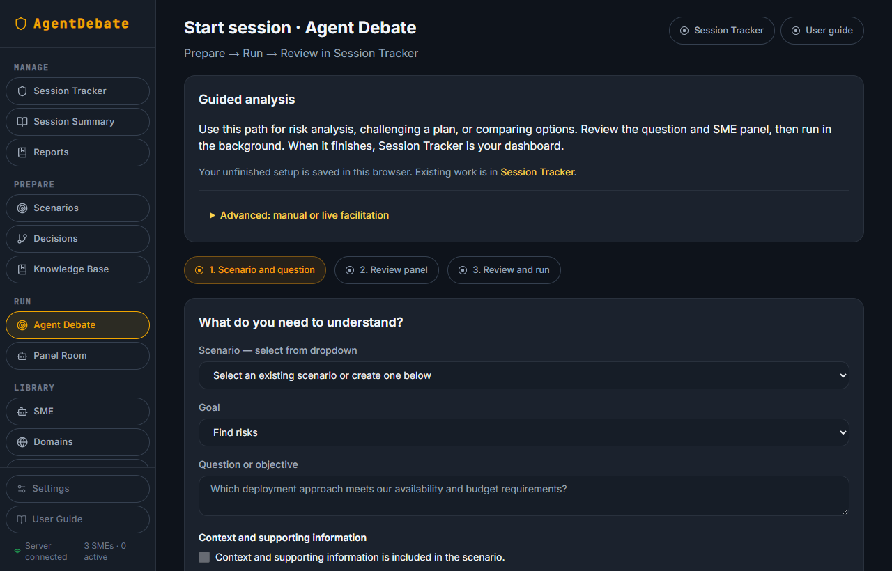
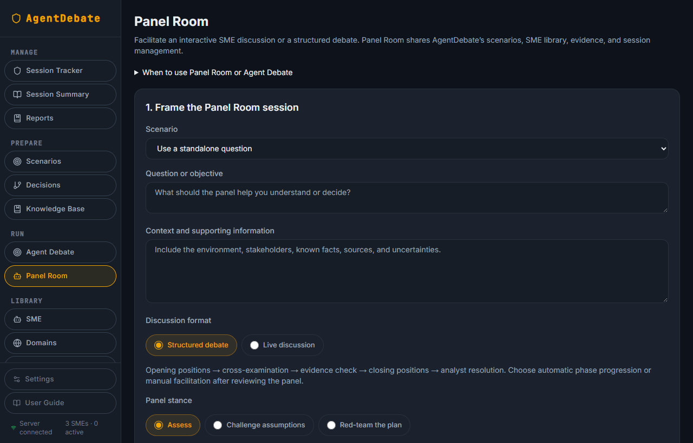
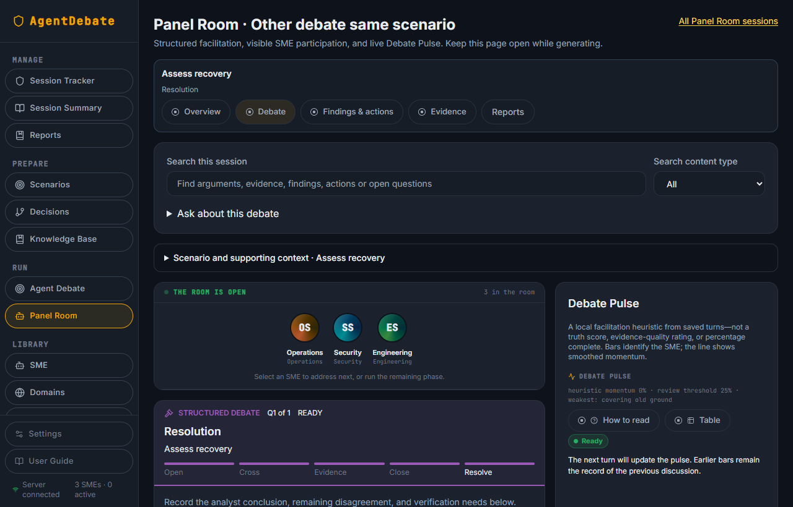
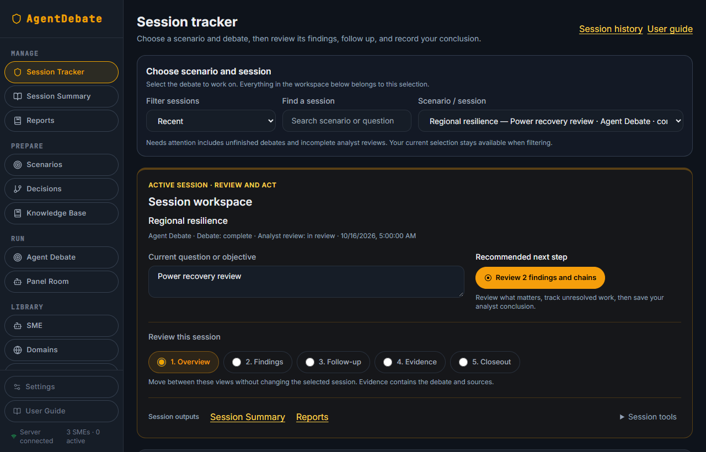
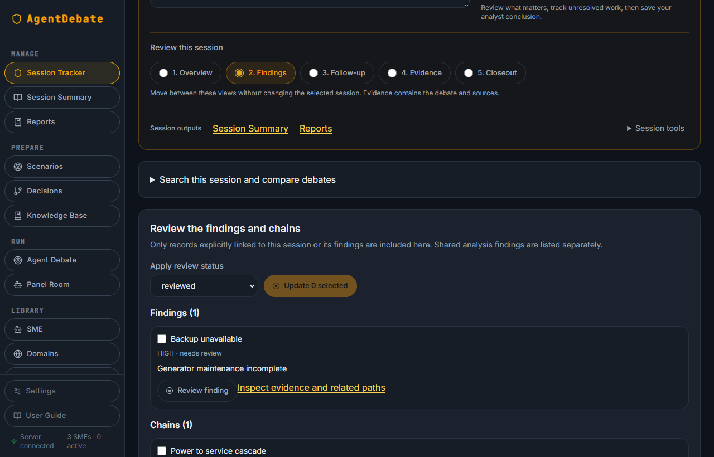
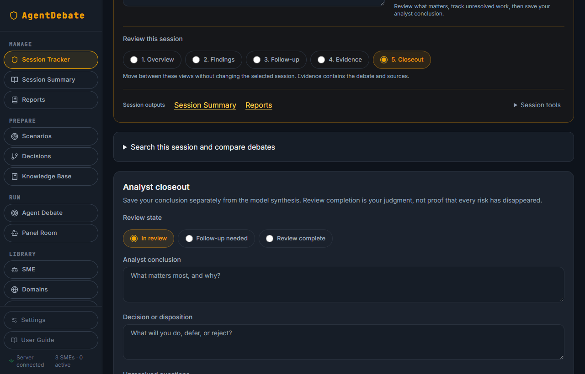
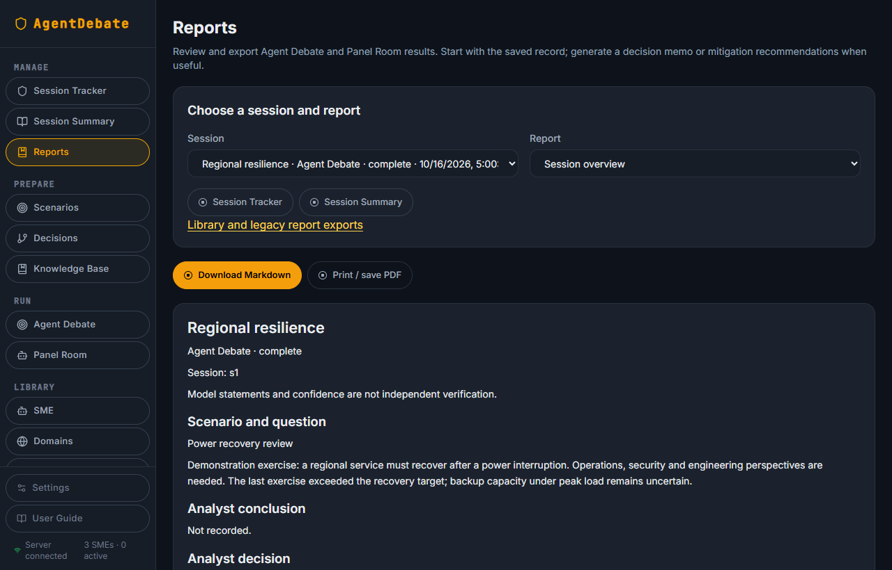

USER GUIDE · LOCAL EDITION
Agent Debate & Panel Room
Workflows, illustrated screens, evidence review,
reporting, and implementation reference.
22 October 2026
Based on the AgentDebate-local application
Use the analyst chapters to run a session. Use the implementation chapters to operate and understand the local application.
A regional service must recover after a power interruption. The analyst is evaluating whether to rely on backup capacity or a failover procedure. An exercise showed a delay; the cause and peak-load capacity remain uncertain.
The useful outcome is a defensible disposition, an evidence gap, and an observable next action—not merely agreement among simulated SMEs.
| Choose | Best suited to | How it runs |
|---|---|---|
| Agent Debate | Risk discovery, challenging a plan, or comparing explicit options against acceptance criteria. | A Node server worker executes the guided analysis and saves progress. |
| Panel Room | Exploring disagreement through structured phases, or facilitating an open discussion. | Browser-driven turns call the local server. Automatic structured debate runs to analyst resolution. |
| Sidebar area | Purpose |
|---|---|
| Prepare | Scenarios, Decisions, and Knowledge Base supply reusable context. |
| Run | Agent Debate starts guided analysis; Panel Room starts facilitated or automatic discussion. |
| Manage | Session Tracker manages analyst review; Session Summary is the reference view; Reports produces shareable outputs. |
| Library | SMEs, Domains, Threats, and Chains manage reusable perspectives and linked analytical records. |
A scenario describes the situation. A session is one debate about that situation. A finding is a claim to assess. A mitigation or follow-up is work to perform and verify. Multiple sessions can examine the same scenario; always check the question, mode, and date.


Domains organize expertise; domain colors help recognize related profiles. Empty domains do not themselves contribute an SME perspective. Review the actual panel rather than assuming the domain tree guarantees coverage.

Automatic knowledge retrieval selects relevant excerpts; it does not send the entire library. An explicit empty source selection uses no knowledge documents. The worker saves completed SME work, synthesis, and resulting analysis material.

Panel Room snapshots the scenario context and SME profiles for a new session. Later scenario edits do not silently replace that starting context. Add relevant new facts or questions explicitly as analyst input.

| Phase | Analyst purpose |
|---|---|
| Opening positions | Establish each SME’s initial interpretation and assumptions. |
| Cross-examination | Challenge claims, surface disagreements, and test alternative explanations. |
| Evidence check | Separate supported statements from gaps, assumptions, and model inference. |
| Closing positions | Identify revised positions and remaining disagreement. |
| Resolution | Record your conclusion or unresolved outcome, then complete the session. |
Use the SME avatars and Invite next SME contribution for individual turns, or Run remaining phase for partial automation. Run debate automatically continues through the structured phases. Search, phase/SME filters, bookmarks, and Jump to latest help locate relevant contributions.
Debate Pulse scores saved contributions using vocabulary novelty, engagement with other perspectives, and textual specificity. The bars identify speakers; the line smooths scores. Use its table and legend for precise interpretation. These are facilitation signals, not truth scores or time estimates.
Straw polls record model stances on an explicit proposition. Compare movement only across completed polls with the same proposition and roster. A settled poll does not establish correctness. Repetitive cross-examination can advance an automatic run to evidence check.
Processing feedback identifies the current effort. Report generation uses Prepare → Generate → Check → Save, with elapsed time, received text activity, or completed evidence-section counts when available. Streaming SME text is provisional until validated and saved.
The results workflow provides source and passage identifiers. The application resolves valid selections to exact saved text and checks references. Invalid source selection triggers a bounded correction attempt. If validation still fails, it does not replace previously saved results.
Matching a quotation proves that the cited text exists in the saved record. It does not prove that its claim is true. A quotation from an SME response remains model-generated material.
| Weak action | Action with a completion condition |
|---|---|
| Investigate backup concerns. | Run the peak-load recovery test and record whether recovery meets the target. |
| Improve evidence. | Obtain the dated exercise log and document which failure stage caused the delay. |

Session outputs contains Summary and Reports. Session tools contains maintenance/navigation controls such as refresh, run details, or returning to a completed Panel Room. Changing a review view does not change the selected session.

Open a finding review to assess evidence, confidence, impact on the decision, and linked work. Inspect exact supporting and opposing passages. Source age, relevance, quality, and independence matter more than simulated agreement.
Model inference means no exact supporting quotation was verified for that finding. It is a prompt to seek evidence, not a declaration that the claim is false. Automated support ratings are not probabilities of truth.
Use verification tools to check new or changed claims. Add source text or an allowed source URL, assess the retrieved passage, and save your judgment and rationale. Exported analyst-reviewed examples are local JSONL; exporting does not train a model.
In Follow-up, state the action, completion criterion, relevant finding/chain, and due date. Implemented work remains open until verified or rejected. A mitigation does not automatically reduce severity; reassess the underlying risk after evidence arrives.


| Report family | How to use it |
|---|---|
| Saved-record reports | Session overview, full debate, SME positions, evidence/source context, Pulse/polls, and Panel Room reviewed results organize saved records without requiring a new model narrative. |
| AI-assisted reports | Decision memo and mitigation/follow-up recommendations use model generation after session completion. Treat the result as a draft; check cited evidence and unresolved dissent. |
For long records, generation can review evidence in sections before combining results. Follow the current processing stage. A source/quote validation failure leaves the prior saved report unchanged; it does not authorize an unsupported final report.
Use Mark report reviewed after your inspection, then Download Markdown or Print / save PDF. Source changes can make a draft outdated. Report review does not verify every underlying claim or create mitigation records automatically.
The local application combines a React interface, a Node API and worker, PostgreSQL storage, and the MITRE AIP model service.
Scenario setup · Panel Room orchestration · Tracker · Reports
Streaming display and retained background page work
Authorization · CRUD · MITRE adapter · verification
Guided analysis queue and worker · production UI from dist
| Work | Persistence and lifetime |
|---|---|
| Guided Agent Debate | Server worker continues independently of browser navigation or closure while the server remains running. Saved progress supports recovery. |
| Panel Room and browser report generation | Continue across application pages through retained active views. Keep the same browser tab open. Reload, sign-out, or closure interrupts in-flight browser work. |
| Panel contributions | Transcript, protocol state, and position updates are saved together in the contribution record. A save failure stops progression. |
| Analyst drafts and outputs | Saved to the local database; tracker notes also use a browser recovery copy for pending edits. |
The AIP bearer key stays on the server. The browser calls the local API; Node translates requests to the configured AIP endpoint. Local storage does not mean offline inference: selected prompt context is sent to MITRE AIP.
| Stage | Information assembled into the prompt |
|---|---|
| SME assessment | Question, scenario context, selected SME profile, constraints/assumptions, relevant knowledge excerpts, and selected analytical material. |
| Rebuttal or subsequent Panel Room turn | Phase instructions, current question, selected prior remarks, recent discussion, saved positions, and relevant source passages. |
| Synthesis / comparison | Saved SME contributions, disagreements, options and criteria where applicable, and evidence needed to form a brief. |
| Results / reports | Saved session records with source references; section review when the record is too large for a single synthesis. |
| Verification | The claim and candidate source passages, with supporting/opposing evidence and limitations to assess. |
Knowledge retrieval selects passages, not whole libraries. Panel Room uses selective recall and recent context; the complete transcript remains saved even though every turn does not receive all earlier text.
Guided SME rounds request 4,096 output tokens; synthesis/comparison briefs request 6,144. The MITRE adapter can retry output-limit failures up to twice with a larger allowance, bounded by the configured ceiling (8,192 by default). Incomplete output is not treated as a completed result.
Section review uses quotation and coverage checks. Those checks help preserve provenance; they do not guarantee semantic equivalence to every original statement. Return to the original evidence for consequential decisions.
server/analysisQueue.js and analysisWorker.js: guided processing.server/llmProvider.js: provider translation and recovery.src/lib/panelWorkflow.js and src/lib/panel/: structured turns, phases, and positions.src/lib/panelReview.js: results and reference validation.server/verificationService.js: finding verification.src/components/layout/BackgroundWork.jsx: retained active page work.
From the AgentDebate-local repository in PowerShell:
./scripts/start-native-local.ps1 -RepositoryPath .
Open http://localhost:3000. The documented native setup uses PostgreSQL on 127.0.0.1:55432, with binaries, database files, and logs under %LOCALAPPDATA%AgentDebate-local. This keeps database data outside the OneDrive repository.
| Setting / command | Purpose |
|---|---|
| DATABASE_URL | Connection to the intended PostgreSQL database; preserve the native port when using the existing setup. |
| LLM_PROVIDER=mitre_aip | Select the MITRE adapter explicitly. |
| MITRE_AIP_BASE_URL / API_KEY / MODEL | Server endpoint, secret, and accessible default model. Keep the ignored .env out of exports and Git. |
| HOST / PORT / APP_ORIGIN | Default local listener and browser origin. Local binding is not organization-wide hosting. |
| npm ci → npm run build → npm start | Install locked dependencies, build the UI, and launch Node. Requires Node 22+ and configured PostgreSQL. |
| npm run db:migrate | Explicit migration command. Server startup also applies pending migrations. |
| npm run verify | Repository lint, tests, and production build; mock/provider tests are not a live AIP health check. |
After frontend changes, rebuild dist and refresh the browser. After server or environment changes, restart the application process. Do not overwrite an existing .env with example values.
In Settings, refresh the accessible model list and test the connection before saving a model. Node needs network/VPN access and appropriate CA trust. Do not disable TLS verification to bypass a certificate failure.
| Symptom | Interpretation and next step |
|---|---|
| SME is “gathering thoughts” | Read the current connection/waiting/streaming stage and elapsed time. Incoming text indicates activity. A healthy local server does not establish upstream AIP health. |
| Slow report generation | Check section counts and Generate / Check / Save stages. Large evidence reviews and bounded corrections take additional calls; the bar is not a reliable time estimate. |
| Output token limit | The response ended before completion. Allow bounded recovery; if it still fails, inspect model/configuration limits. Do not accept truncated output as final. |
| Malformed JSON | The model response did not meet the required structure. The Panel Room path handles trailing commas and one correction retry; persistent failure stops the turn. |
| Unmatched source / quotation | A reference failed validation. Inspect saved source text and retry after correcting the source issue. Prior saved results remain available. |
| Contribution save failed | Retry saving the unsaved contribution before resuming the debate. Navigating away is different from reloading or closing the browser. |
| Stopped or interrupted automatic debate | Return to the session and resume automatic debate from saved progress. Each contribution has a 15-minute timeout; there is no one-hour total debate cutoff. |
| Tracker draft save failed | Use Retry draft save. Preserve pending browser text until database saving succeeds. |
| Local page unavailable | Check the application process and app logs, then PostgreSQL. Start the documented local script when processes are stopped. |
Inspect app.stdout.log, app.stderr.log, and postgres.log under the local runtime directory. Confirm the recorded PID belongs to this application before stopping a process. Do not delete the database directory to resolve an application error.
Recommended operational practice: back up PostgreSQL with the organization’s approved tooling and test restoration into a separate database. A Git copy contains application code, not the running database contents or ignored credentials.
src/pages/UserGuide.jsx — current in-application workflow guidance.docs/LOCAL_RUNNING.md — this Windows runtime.docs/MITRE_AIP_SETUP.md — provider configuration.docs/SESSION_TRACKER.md and SESSION_SUMMARY.md — analyst management.docs/VERIFICATION_AND_REVIEWED_EXAMPLES.md — review and evaluation examples.docs/PANEL_ROOM_INTEGRATION.md — integration background.
Prepared from local source and current UI on 22 October 2026. Current implementation and in-app guidance were preferred where older documents differed, including automatic-run lifetime and result passage validation. Screenshots use simulated records and model responses. No live AIP health or hosting approval is claimed.